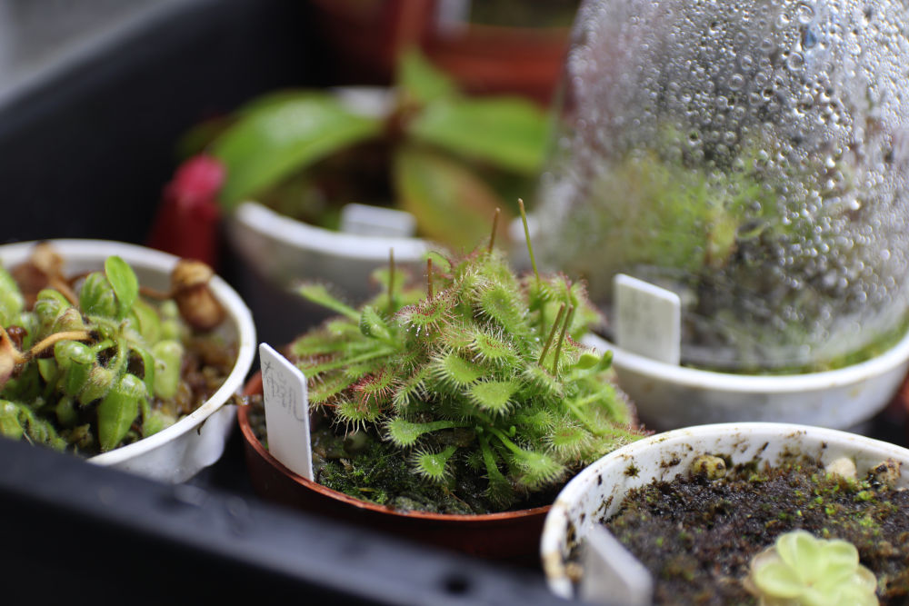
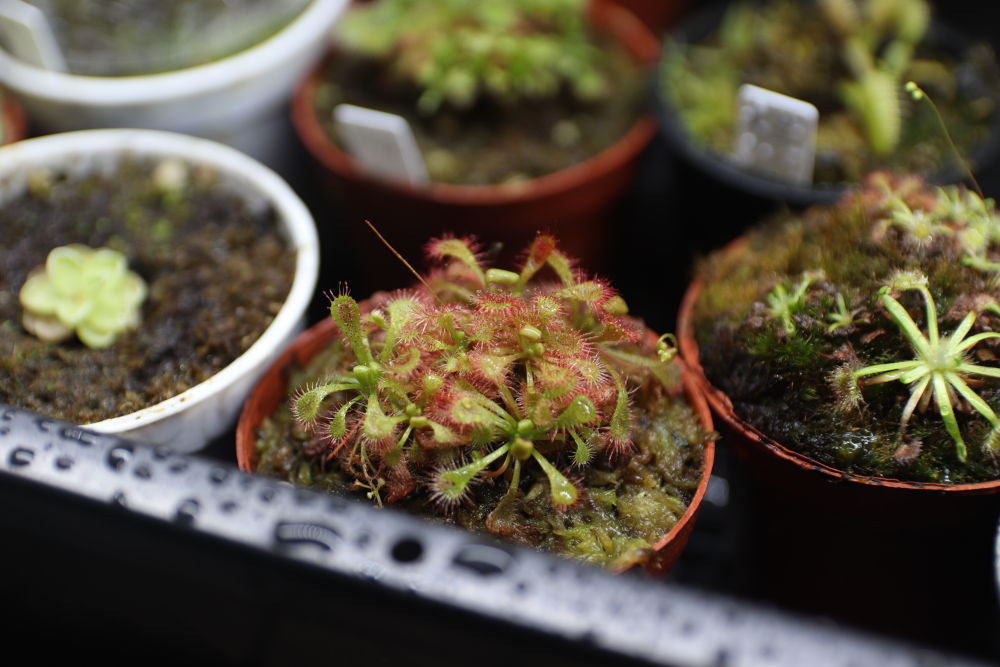
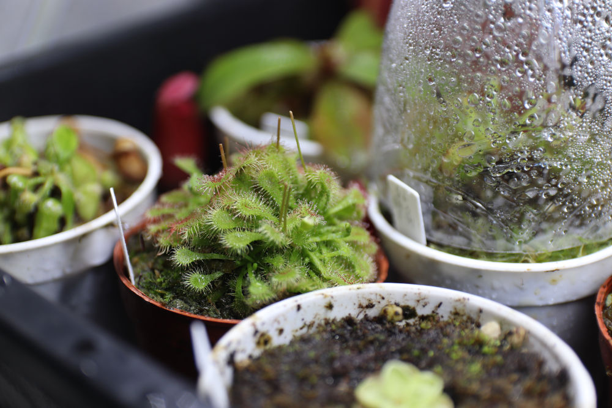
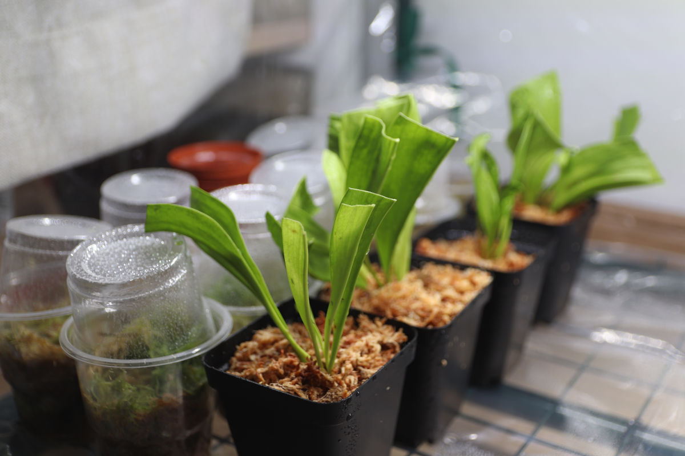
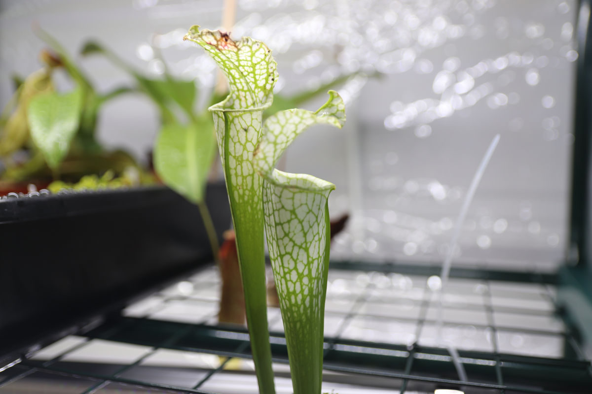
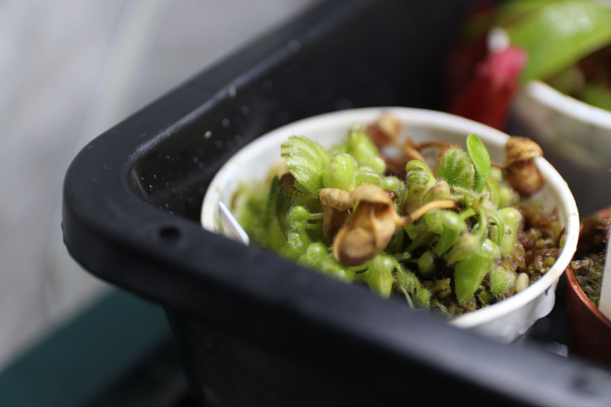
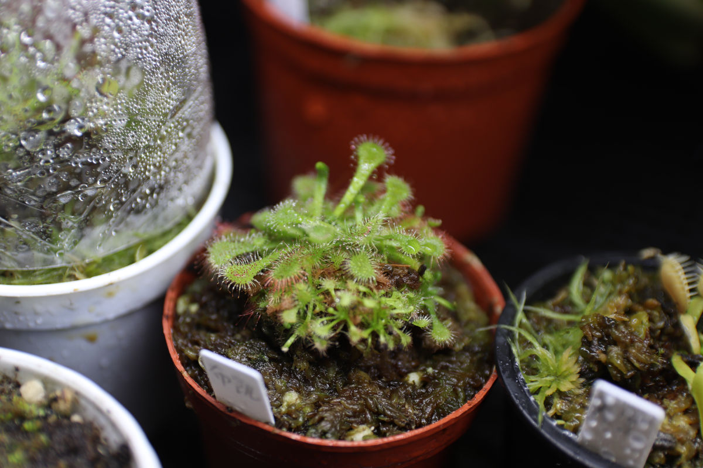
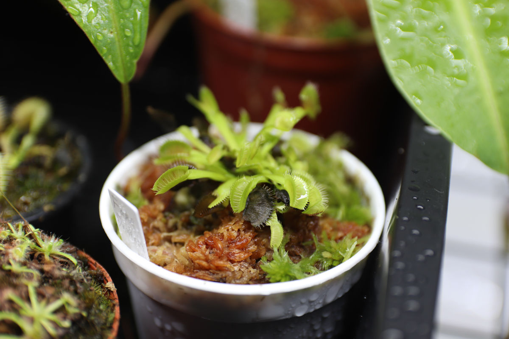
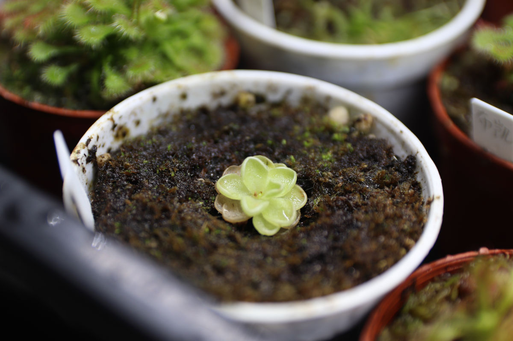

重新捡起了弃坑多年的食虫植物系列。
多图预警。
咱其实很久以前就入坑了食虫植物，最早可以追溯到我念小学的时候，当时克服重重困难就为了养一两颗草，但是都没怎么养活过。后来念大学的时候因为许多原因不方便养所以弃坑了几年，大一还没有疫情的时候在暑假去了上海和杭州，大中午的顶着炎炎烈日坐了好几个小时的公交车从杭州市区到桐乡的“小虫草堂”实地参观了一番，当时拍了好多照片（感兴趣的可以看看这篇博客），疫情之后就再也没能去远一点的地方旅行过（两次实习除外），后来食虫植物这个玩意也逐渐被我抛在脑后很长时间没有去想过它。
最近由于一些机缘巧合在研究地理学的太阳高度角与经纬度和节气之间的关系时（确信），无意间想起了我曾经养过的这群对生存条件要求非常苛刻的食虫植物，这个念头挥之不去，加上现在有了一定的养这玩意的基础，于是又重新入坑了这个系列。
以下的图片都是植物邮寄到手缓了四五天后用相机拍的直出照片，没调颜色，没裁剪，只对图片压缩了尺寸。光照用的是全光谱的植物补光灯，因为是新到的小苗，很多植物状态并不太好还伴随着许多叶片的枯萎，因为懒加上没有镊子，所以有些植物的枯萎叶子没有修剪。后续如果养的好的话，也许会出新的系列专门记录一下。

布凯茅膏菜

某不知名的茅膏菜

布凯茅膏菜

新种植的活水苔（左）和不知名的瓶子草（右）

白瓶子草

土瓶草

布凯茅膏菜

Fake Dracula

爱斯捕虫堇
后面还有几棵猪笼草，但是瓶子基本都枯萎了只剩绿油油的大叶子，所以就不拍照片了，等以后如果养活了再水一篇新的博客吧。